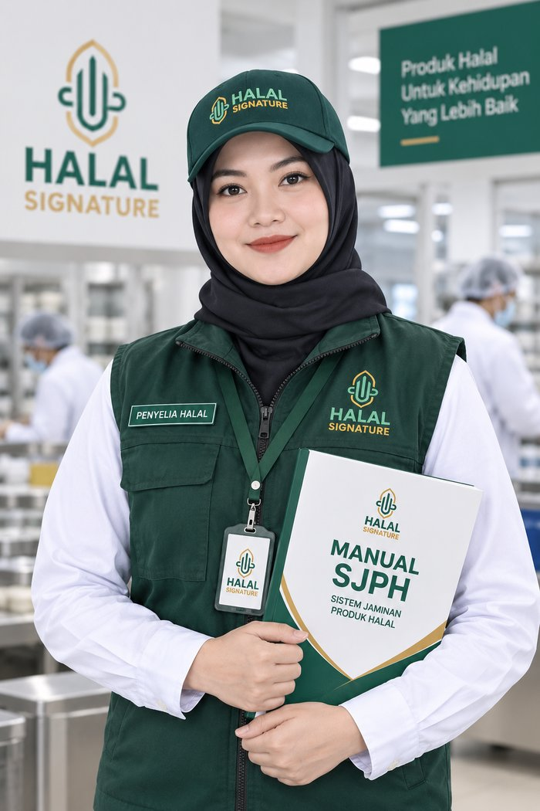
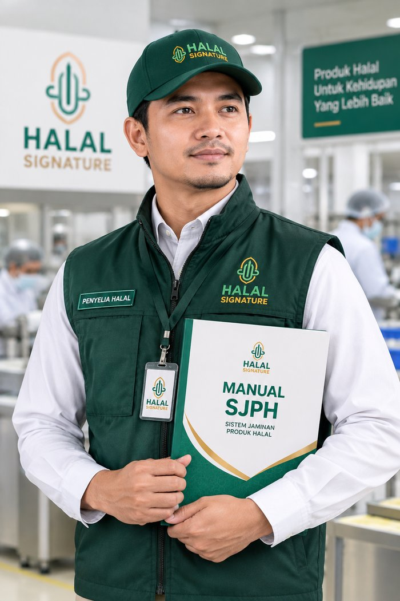

Penyusunan dokumen SJPH
Manual Sistem Jaminan Produk Halal, daftar bahan, dan diagram alir proses produksi sesuai standar BPJPH.

Pendampingan sertifikasi halal BPJPH skema reguler untuk usaha pangan, kosmetik, dan produk kimia.

Telah mendampingi

Signature Halal mendampingi pelaku usaha memenuhi kewajiban sertifikasi halal sesuai regulasi Badan Penyelenggara Jaminan Produk Halal (BPJPH) melalui skema reguler, dari awal pengajuan hingga sertifikat terbit.
Kami telah mendampingi dapur produksi skala besar, rumah potong unggas, UMKM pangan, kosmetik, dan produk kimia. Pendekatannya kami sesuaikan dengan kondisi dan skala usaha masing masing klien.
Kami mendampingi seluruh tahapan sertifikasi halal skema reguler, dari persiapan dokumen sampai sertifikat terbit.
Manual Sistem Jaminan Produk Halal, daftar bahan, dan diagram alir proses produksi sesuai standar BPJPH.
Diskusi kebutuhan, pengecekan kelengkapan legalitas usaha, serta identifikasi bahan dan proses produksi sebelum pengajuan dimulai.
Pengajuan permohonan melalui sistem SIHALAL, termasuk pemilihan Lembaga Pemeriksa Halal.
Pendampingan audit lapangan di lokasi produksi serta tindak lanjut atas temuan hasil audit.
Pendampingan sampai penetapan status kehalalan produk melalui sidang komisi fatwa.
Pangan, kosmetik, dan produk kimia, dengan penyesuaian untuk UMKM maupun industri skala besar.
Alur yang kami jalankan bersama klien, dari konsultasi awal sampai sertifikat halal dapat diunduh di SIHALAL.
Seluruh tahapan mengikuti skema reguler BPJPH sesuai Undang Undang No. 33 Tahun 2014 tentang Jaminan Produk Halal.
Diskusi kebutuhan, pengecekan legalitas usaha, dan identifikasi bahan serta proses produksi.
Penyusunan manual Sistem Jaminan Produk Halal, daftar bahan, dan diagram alir produksi.
Pengajuan permohonan melalui sistem SIHALAL, termasuk pemilihan Lembaga Pemeriksa Halal.
Pengecekan kelengkapan dan kesesuaian dokumen sebelum audit lapangan dijadwalkan.
Pemeriksaan langsung ke lokasi produksi, mencakup bahan, proses, alat, dan penyimpanan.
Tindak lanjut atas temuan audit, termasuk penyediaan bukti pendukung tambahan.
Penetapan status kehalalan produk melalui sidang komisi fatwa.
Sertifikat halal dapat diunduh melalui SIHALAL dan siap digunakan pada label produk.
Undang Undang No. 33 Tahun 2014 tentang Jaminan Produk Halal mewajibkan sertifikasi halal untuk kategori produk berikut.
Kami membantu Anda memahami kewajiban ini dan mendampingi proses sertifikasinya secara menyeluruh.
Ceritakan produk dan skala usaha Anda. Kami susunkan langkah sertifikasi yang realistis untuk dijalankan.
Konsultasi GratisAtau hubungi langsung di 0813-4364-0048
Kami siap menjawab pertanyaan seputar sertifikasi halal skema reguler untuk usaha pangan, kosmetik, maupun produk kimia Anda.